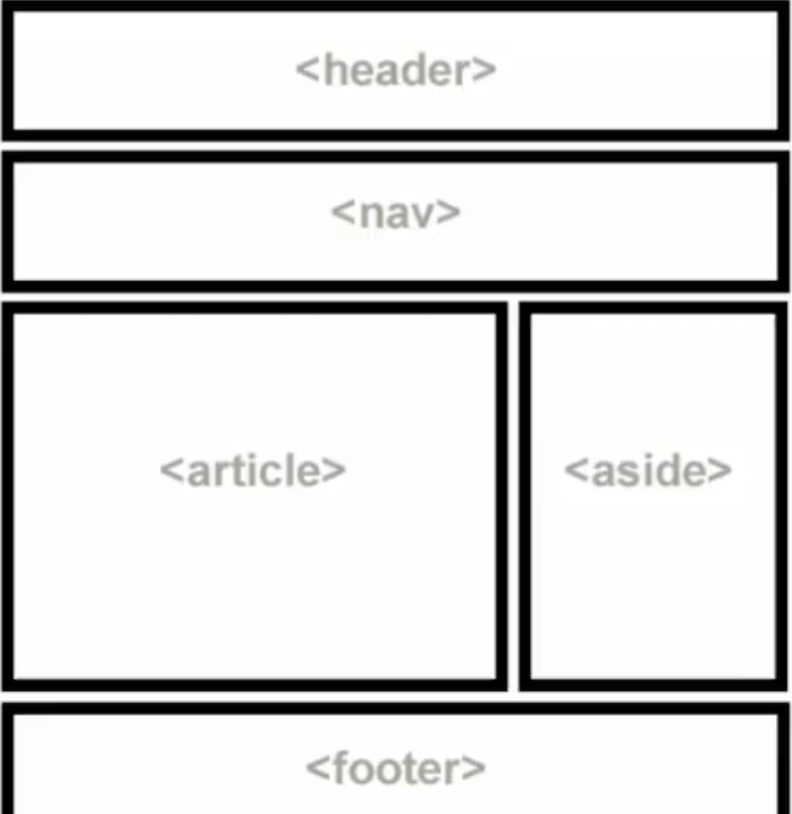
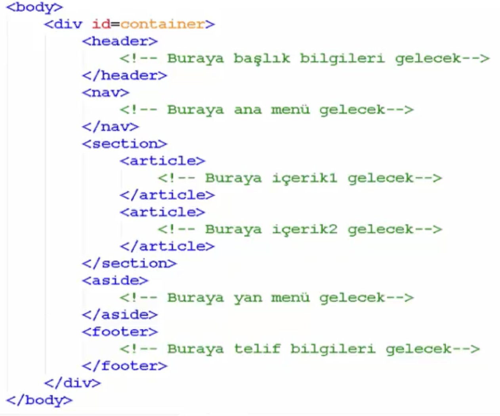

Başlık etiketlerinin içerikleride SEO için önemlidir:
ABC Marka Sarı Lacivert Deri Futbol Topu
Sitenin arama motorları tarafından önerilirliği için semantik etiketlere dikkat etmek gerekir:

Diğer semantik etiketler:
- <article>: Yorum, haber, forum gönderisi, blog gönderisi, müzik, veya video gibi içerikleri kapsar.
- <section>: Genelde benzer konuya sahip birden fazla <article> etiketini barındırır.
- <header>: Bir sayfanın, makalenin veya bölümün başlık bilgisini kapsar.
- <nav>: Sayfa içine veya sayfa dışına link vermek için oluşturulan menüleri kapsar.
- <aside>: Sayfaların sol ya da sağ kenarında bulunan menü ve benzeri içerikleri barındıran bölümdür.
- <footer>: Herhangi bir sayfanın, makalenin, bölümün veya menünün en altında bulunur ve genelde en yakın içeriğin iletişim ve telif hakkı bilgilerini barındırır.
- <figure>: Fotoğraf, şekil, illüstrasyon gibi içerikleri ve bu içeriklerle ilgili başlık bilgisini barındırır.
Semantik sayfa düzeni:

Etiketlerin görünürde ki yerini değiştirmek için CSS gereklidir.